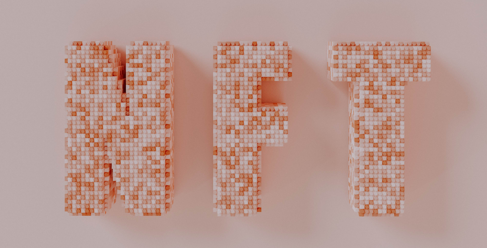

Collective Fractional NFT Ownership DAO
Executive Summary
Problem. Web2 content, creators, and their communities are controlled by companies that extract net value from their users. Profit from content and often even the content itself is owned by neither the community nor creator, yet they carry the burden of promotion. Web3 will serve creators first by adding new ways to monetize their content. NFTs are an important part of Web3 monetization, but current implementations have yet to capture even a fraction of the total addressable market. The difficulty of creating new marketplaces and rigid ownership structures for collectors price out all but the wealthiest participants, drastically limiting accessibility and volume. As a collectible, the lack of supply prevents community participation and makes each 1/1 NFT an illiquid asset. This illiquidity forces artists to mint a large portfolio that can collectively receive many valuation events by other collectors. Because collectors functionally vote on works with their purchases, the price of a vote is equal to the cost of the piece. This cost limits the number of valuation events, increases value uncertainty, and is a barrier to trading. This barrier to entry further discourages many new artists and collectors from minting and buying. Artists and collectors need a way to discover the true value of their work without producing a large collection. A new collective form of fractionalization will solve these problems by simplifying the collector experience, decreasing risk, and increasing the number of valuation events for artists and their works.
Scope. The solution to collective fractionalization and ecosystem growth lies in marketplace cooperation and NFT standardization. The DAO will create a community token that allows holders to buy a fraction of every participating NFT all at once. The collection of NFTs will generate steady revenue via trading, licensing, consignment, etc. of which a fraction will be distributed among token holders. Purchasing tokens gives holders access to the value of Algorand’s entire NFT ecosystem.
The DAO will provide any interested marketplaces with standard smart contracts that have been approved by a security audit, ensuring safe NFT purchases. These smart contracts will enable customizable minting, auctions, and royalties as a service to new and existing marketplaces. Using standard contracts will allow a common metadata format to be included with every NFT. The metadata will include valuable information for collectors, most importantly a verification check indicating that the NFT is DAO-approved. The standard metadata format will enable aggregator services, such as a cross-platform NFT search engine, to instantly gain access to a large feature set for indexing and ranking. A standard user profile format will enable integration of user data from each marketplace they join. A search engine that indexes all NFTs on the chain would be able to check NFT metadata for a verification hash and display this information for collectors as a check mark during search. Token holders will be able to rank NFTs by intrinsic value, which promotes the work, crowd-sources verification for scalability, and helps the DAO prioritize assets for hosting. Community voting dramatically lowers the barrier to entry and thereby increases the frequency of valuation events. Once a marketplace has incorporated the standard smart contracts and metadata, its NFTs will be cross-compatible with every participant for secondary sales and other features. Offering these services will make it easier to safely and easily build more marketplaces on Algorand.
Fractionalizing ownership of the entire creator economy on Algorand would fully leverage the network effect to grow the ecosystem. The ability to simultaneously purchase a fraction of every NFT on a blockchain represents a significant innovation in the space.
Methods. The DAO runs according to a series of smart contracts that trigger when both NFTs and tokens are sold. Participation in the DAO requires marketplaces and NFT sellers to use the DAO’s standard smart contracts, which include attractive features to incentivize participants. The minting contracts will include a standard metadata format for NFTs and user profiles. Contracts controlling NFT sales include a small commission that the DAO distributes to its token holders. The aggregate NFT sales fees divided by the number of tokens determine the reward rate. Thus the token price is backed by the intrinsic value of distributed rewards. To maximize liquidity and accessibility, tokens will be released on Tinyman and potentially other DEXs. The DAO will use some of the algos generated by NFT sales fees to provide liquidity for the Tinyman pool, generating income via transaction fees. Furthermore, algos held by the DAO from transaction fees and the remainder of NFT revenue fees will receive participation rewards and potentially Layer 1 governance rewards. These algos will represent the DAO’s discretionary budget, which will be used to pay for legal protection of DAO members, feature development, or any project token holders vote to enact. A complete breakdown is available in Figure 1b.
The founding DAO members will create a universal smart contract with multiple sales options, customizable fees, and an option to enable distribution of token holders’ fraction of revenue. Smart contract updates can be submitted and voted upon by marketplaces, distributing the most useful features to the broader community.
Benefits to Algorand Ecosystem and Beyond. The community token will offer significant benefits to holders by allowing them to own a part of the entire Algorand NFT ecosystem. This feature will make trading NFTs on Algorand irresistible to collectors that simply want general exposure to the NFT asset class. Choosing particular pieces is risky, requires effort for promotion, and offers no liquidity to collectors. A collective fractionalized alternative significantly reduces risk by averaging out value over a large pool, simultaneously removing the effort of picking pieces. This strategy generates liquidity by tying tradable assets to the NFTs with a much more accessible price.
The DAO also aims to provide emerging marketplaces with all of the services they need to safely scale up the ecosystem. Best practices should be distributed across the community to avoid repeating errors learned by other marketplaces. Instead, marketplaces should be able to receive all the legal and technical guidance they need to build safely, securely, and in compliance with taxes. Providing best practices allows marketplaces to focus competition on user experience, community dynamics, and features.